Important features
Command line access
As expressed above, DS9 will execute a Shell command, which will
call the package's functions. DS9 allows prompting this command each
time a function is launched through:
Analysis -> Analysis command log. Copy-pasting this command into a
Shell interpreter (like Terminal) will provide the same result. The
package is then totally accessible via a Shell interpreter via command
lines.
This important feature could allow the plugin to be operated from other
image visualization software like Ginga or Glueviz. Running DS9Utils
inside the terminal will show all the available functions and running
DS9Utils <function> -h will display the help
(Figure [ds9/DS9Utils.jpg]
) of the related function. This leads to
the next major feature: multi-image analysis.
![[ds9/DS9Utils.jpg]](#ds9/DS9Utils.jpg){kind=link}
All functions arguments are parsed through the argparse module.
Functions can then be called from DS9, terminal or directly from
Python using argv parameter:
\(\(\verb! Python_command(argv="-p '/data/**/*.fits' -e 'ds9-=1'")! \label{eq:Python}\)\)
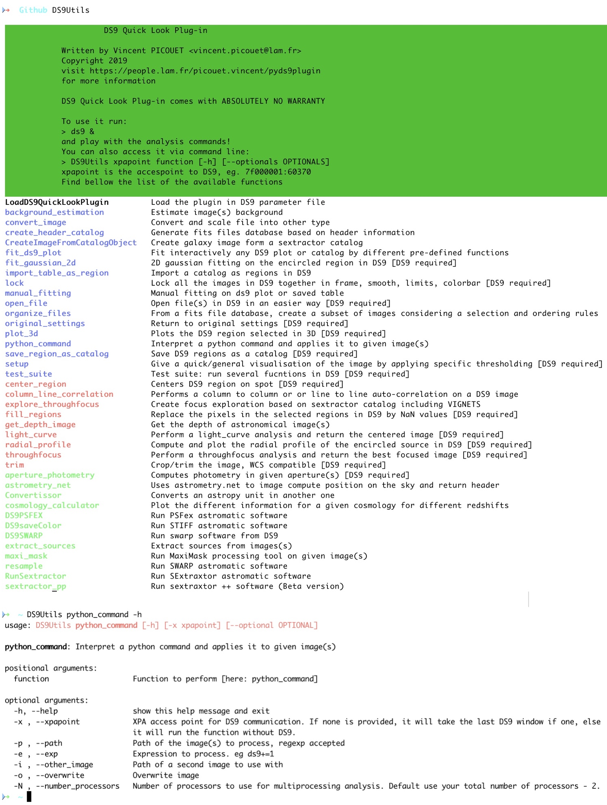
Multi-image and multi-threaded analysis
pyds9plugin is, in essence, a quick-look plugin that is perfect for
visualizing, exploring, analyzing, and processing the displayed image.
However, it was essential to make it suitable for more important
pipelines as soon as the parameters have been tuned. To this end, all
processing functions can be launched on a set of images by specifying
the path of all the images using regular expression:
DS9Utils <function> [-o OPTIONAL] --path "/data/**/*.fits"
This feature allows, for instance, to spend important time optimizing interactively the \(\sim50\) parameters of source extraction and add a whole image folder to the analysis command to process all the images when the parameters have been fine-tuned.
To take advantage of modern computer architectures, it uses
multi-threading to run each image on a different thread. The number of
processors to be used is accessible via -N or --number_processors
argument. By default, the code will use the total number of processors
of the machine minus 2. A video can be found .
Python interpreter
We added a Python interpreter to the extension. This allows directly applying Pythonic one-line transformations to the displayed image.
We list below some of the numerous one-line possibilities that can, for instance, be used for generating some noise images, apply linear transformation to images to decrease artificially your exposure time for instance), add noise to your image, mask bright sources, or perform more complex transformations like fast Fourier transform or auto-correlation.
DS9 = np.median(ds9) + 0.1 (ds9-np.median(ds9))
ds9+=np.random.normal(0,0.5*ds9.std(),size=ds9.shape)
ds9+=np.random.normal(0,0.5*ds9.std(),size=ds9.shape)
ds9[ds9>np.percentile(ds9,99)]=np.nan
ds9=abs(fftshift(fft2(ds9)))**2
ds9=correlate2d(ds9,ds9,boundary='symm', mode='same')
Python macros
Because one line is short, it is possible to simply give the path of a
Python file. For instance, giving the path of the code below
interpolates masked values in the DS9 frame and returns the new image
in the DS9 GUI:
\
Basically, any function that does not require user's parameters can be
directly implemented this way which is simpler as multiprocessing is
already implemented. As well as for the previous section, the defined
function can be run on a set of images by adding the regular expression
path to the --path parameter (see
Section 3.1.2
and ):
DS9Utils python_command --exp "/softs/pipe.py" -p "/data/**/*.fits"
The different variables that can be used inside macros are ds9 for
the image loaded in DS9 and header for its header and d is the
XPA access point for a more extensive communication with DS9.
Following lessons learned from @Joye2005, I decided to include in
DS9 analysis functions only the ones that are generic/helpful and that
require input parameters. Functions that do not require any parameter
should be implemented as macros as multiprocessing is already
implemented. To help people write their own, I published within the
plugin several macros (in DS9functions/macros). Each macro (FFT.py,
Autocorrelation.py, trimming.py, Column_line_correlation.py,
Interpolate_NaNs.py, etc.) can either contain one specific task
(compute and return the FFT of the DS9 image, trim wcs images,
interpolate masked values in the image, etc.) or a series of processing
(background subtraction source extraction astrometric calibration)
from astropy.convolution import interpolate_replace_nans, Gaussian2DKernel
STD_DEV = 1
while ~np.isfinite(ds9).all():
kernel = Gaussian2DKernel(x_stddev=STD_DEV, y_stddev=STD_DEV)
\texttt{DS9} = interpolate_replace_nans(ds9, kernel)
STD_DEV += 1
VTK 3D rendering
The Visualization Toolkit (VTK) is the leading open-source software
for manipulating and displaying scientific data. It comes with
state-of-the-art tools for 3D rendering, a suite of widgets for 3D
interaction, and is already supported by some of the other applications
(JS9, Icy, AstroImageJ). We integrated it into the plugin to
increase the interaction with selected regions in the image. The
function allows to add contours, smooth the image rendering, change the
scale, or create a rotating .gif video. Possibility to even fit
interactively 2D Gaussians. It is also possible to analyze time series
in 3D like through-focus or to explore the focus in the field.
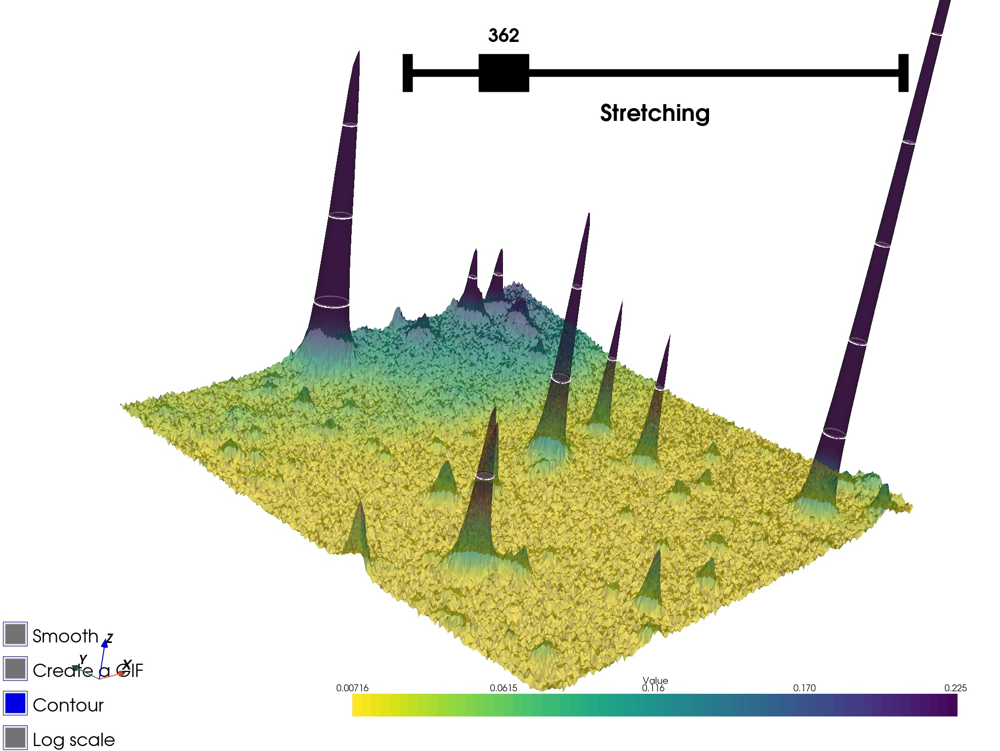
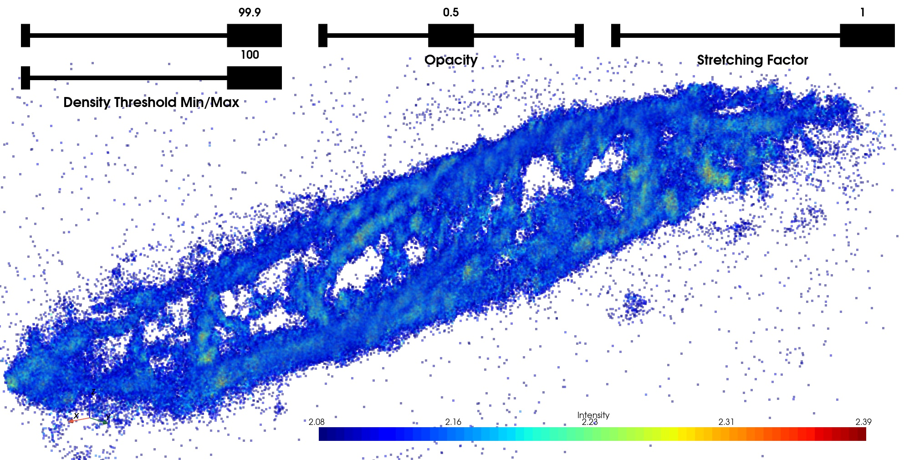
Interactive profile fitting
DS9 incorporates the very useful possibility to interactively plot 1D
profiles (can be tilted, stacked in the orthogonal direction, plot the
third axis component, etc). This gives essential qualitative
information.
Because it is essential to retrieve information from images
(spatial/spectral resolution, diffusion exponential decay, etc.) it is
critical to turn this qualitative information into re-usable
quantitative information. To do this we added an interactive plot fitter
to the extension (based on the
dataphile package). This
allows fitting 1-D profiles with interactive adjustment of the initial
guess parameters to ensure that the fit converges. This function works
on any DS9 plot, which means that plots generated via the plugin
(radial profile or light curve) can be fitted with this function.
As multi-feature analysis is essential in astronomy, the fitting is decomposed into two components: the background and the features added to the background. The different background possibles are constant, slope, exponential, double-exponential, logarithmic. It is then possible to add any number of features among Gaussian, Voigt, or Moffat profiles (see Figure [ds9/fit2d.jpg] ). Each feature parameter can be moved independently to be sure that the final fit converges. The definition of the different functions is shown in table 1. To get the most of this fitting function, we added the possibility to add any other user-defined functions.
![[ds9/fit2d.jpg]](#ds9/fit2d.jpg){kind=link}
The function just needs to be added to the package file:\
pyds9plugin/Macros/Fitting_Functions/functions.py
For each fitted parameter, be sure to define a list as default argument as it will be used to define the lower and upper bounds of the widget fitter.
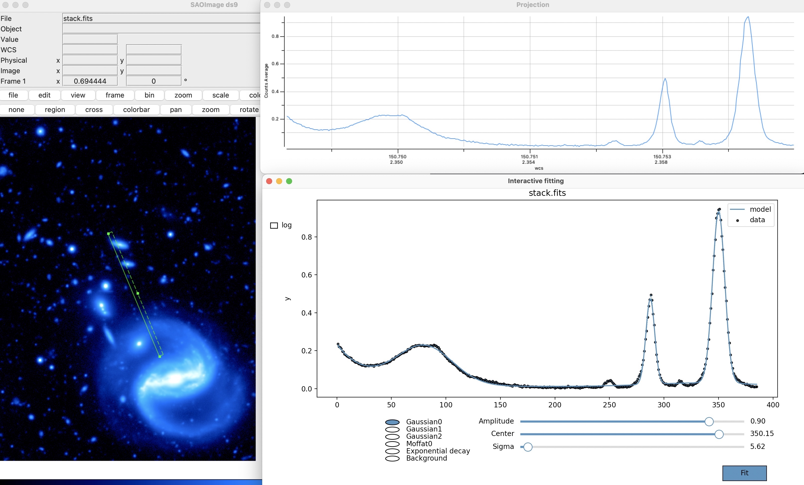
| Function | Formula |
|---|---|
| Constant | \(y = a\) |
| Slope | \(y=a \times x\) |
| Exponential | \(y=a\times e^{-\frac{x}{b}}\) |
| Logarithmic | \(y=a + b\times ln(x-c)\) |
| Double exponential | \(y=a\times e^{-\frac{x}{b}} + c\times e^{-\frac{x}{d}}\) |
| Gaussian | \(y=a \times e^{-(\frac{c-b}{2*c})^2}\) |
| Moffat | \(y=a\times (1 + \frac{x-b}{c}^{2})^{-d}\) |
| Voight | \(y=a \times\frac{ \mathbb{R}\left ( wofz \left ( \frac{(x-b) \gamma i}{c\sqrt{\pi}} \right ) \right ) }{ \mathbb{R}\left ( wofz \left ( \frac{x \gamma i}{c\sqrt{\pi}} \right ) \right ) }\) |
Fitting functions of the profile fitter. The first four functions are the possible backgrounds to fit. On top of this background, you can add as many Gaussian/Moffat/Voigt features as you want. The wofz function in the last line is the Faddeeva function \(wofz(z)=e^{-z^2} \times (1-erf(-iz) )\) accessible in Python via scipy.special.wofz
If no plot neither catalog is given, the window will work as a regular plotter, where the user can plot its own function and change the parameters.
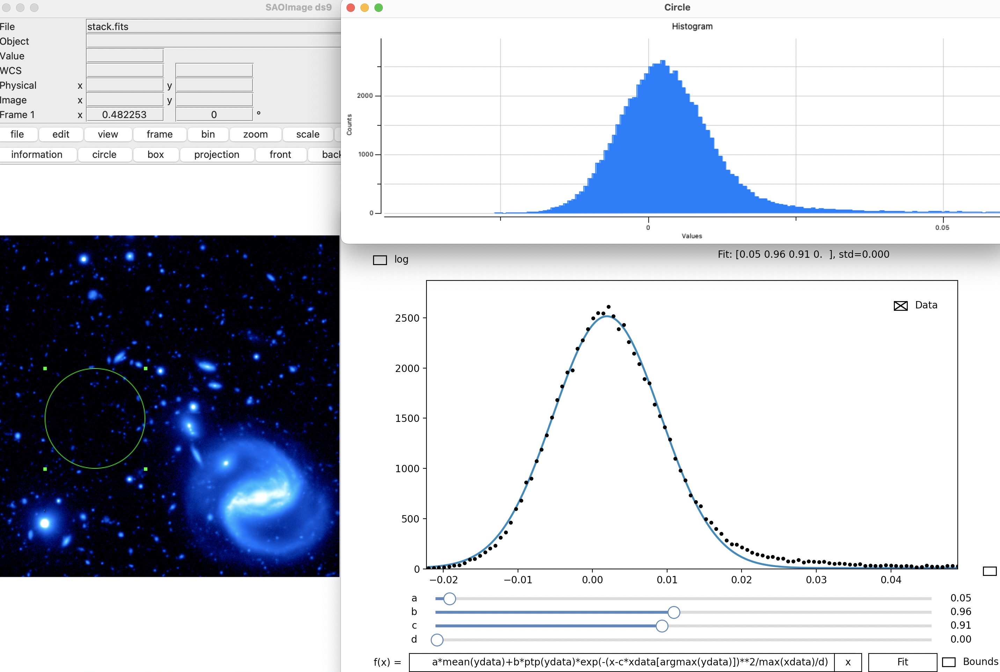
Fits file organizer
This final functionality is a fits organizer, divided into two functions (Create header database and Filtering and organizing images). The first function generates from the input images (regular expression) a catalog (CSV table) concatenating all information contained in the header images. It will also add important information such as the path, directory, basename, creation and modification date, size, etc. of each image.
The output database will give at a glance all image information which
will help understand the dataset, spot failures in the acquisition, etc.
It can also be open with TOPCAT to perform more complex analysis and
selection of images (See figure
[ds9/files.jpg]
)
![[ds9/files.jpg]](#ds9/files.jpg){kind=link}
As only header information is read (not the pixels), the function is
fast even on a significant number of files (a few seconds for thousands
of files). Still, it can be very interesting to add to the output header
catalog some image information such as the images' median, noise, the
number of saturated pixels, or any other information. To this end, the
function accepts Header catalog Macros where the user can write any
Python command to append image estimators to the output header catalog.
For instance, the following piece of code add to the header database
some information about the image (column/line correlation, saturated
pixels fraction, number of cosmic rays, etc.):
import numpy as np
SATURATION = 2 ** 16 -1
data = fitsfile[0].data
columns = np.nanmean(data, axis=1)
lines = np.nanmean(data, axis=0)
table['median'] = np.nanmedian(data)
table["Lines_difference"] = np.nanmedian(lines[::2]) - np.nanmedian(lines[1::2])
table["Columns_difference"] = np.nanmedian(columns[::2]) - np.nanmedian(columns[1::2])
table["SaturatedPixels"] = 100 * np.mean(data > SATURATION)
table["CosmicRays"] = count_cosmic_rays(data)
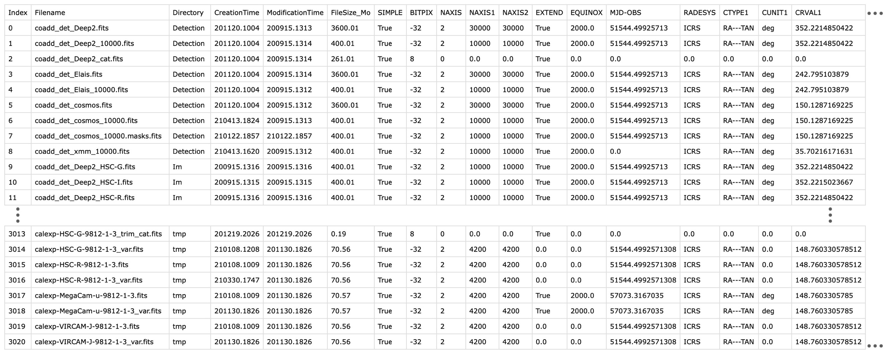
The output header database can be used with the second function, which filters the images and organizes them following organizational rules. This function allows creating subsets of images verifying some header conditions. For instance, all images created after the 12th of September 2020 that have a positive EMGAIN or an exposure higher than 100 seconds can be recovered with this condition: \(\(\renewcommand{\theequation}{6} \verb! (EMGAIN > 0 | EXPOSURE >100) & CreationTime>200912 ! \label{eq:selection}\)\)
The files are then directly organized in the file system with an
arborescence following the column names. For instance, by giving
EMGAIN,EXPOSURE, all files will get organized as shown in
figure [ds9/filter_files.jpg]
. A video can be found . The function
only generates aliases and does not move any original files. The header
database and organized aliases are respectively saved in
\(\sim\)/DS9QuickLookPlugIn/HeaderDataBase and
\(\sim\)/DS9QuickLookPlugIn/subsets.
![[ds9/filter_files.jpg]](#ds9/filter_files.jpg){kind=link}
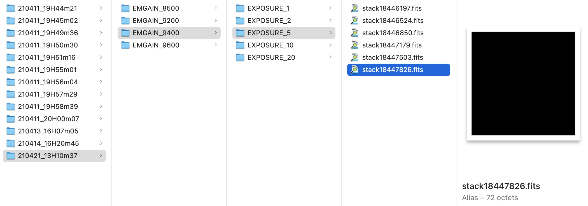
The different functions
The functions are divided into three categories to help the organization (see Figure [ds9/commands.jpg] ):\ Generic functions, instrumentation-related functions, and astronomical-software-related functions. To make more accessible the understanding of each function, they are possibly prefixed by three badges:\ Boosting interaction: These functions are considered to improve the interactivity between the user and the visualized data. This interaction can be based on user-defined regions, interactive fitting, generation of pickable metadata, etc.
![[ds9/commands.jpg]](#ds9/commands.jpg){kind=link}
DS9 not required: The function is totally accessible via Terminal
independently from DS9, which means that the function does not need
DS9 to be installed/open for being called. This can be interesting for
server users.
Multi-image processing: The function, accessible via Shell
command, can be run on several images, and each analysis will run on a
different thread (See
section 3.1.2)
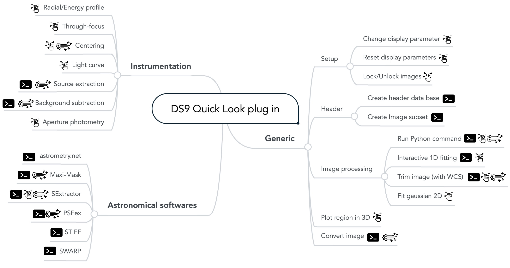
Generic functions
This series of very general functions aims at filling some gaps of DS9
with stable generic functions (fitting, region-based functions), gaining
some time with key functions: (change display settings/lock parameters),
etc.
-
Change Display Parameters This basic function applies specific thresholding, scale, and colormap to the
DS9-loaded image to give a quick and general visualization of the image. Accessible via one key hit (S), this allows exploring the full depth of the image quickly. More interestingly, the user can focus on a specific region of the image by creating and selecting a box or a circle on the region of interest (). -
Lock / Unlock Frames Access all the locking parameters of
DS9frames at once to gain time: frame, crosshair, smooth, scale-limits, colorbar. -
Create Header DataBase Creates a catalog combining all meta-data information.
-
Filtering & organizing images Uses fits file database to create and order nicely filtered fits files (Section 3.1.7)
-
Macro / Python Command Interprets a Python command or file and applies it to given image(s) (Sections 3.1.3
and 3.1.4 )
-
Interactive 1D Fitting On Plot Fit interactively any
DS9plot or catalog by different pre-defined functions (Section 3.1.6 ) -
Fit Gaussian 2D Performs 2D Gaussian fitting on the encircled region in DS9. Opens up a VTK 3D plot of the encircled data. Any other feature can be fitted by selecting it (r). Each fit creates a region on the
DS9GUI with the fit parameters ofastropy.modeling.functional_models.Gaussian2D(). -
Trimming Cropping/Trimming function that keeps WCS header information.
-
Open file(s) in
DS9in an easier way. Possibility to enter the path of an image and a regular expression to open multiple files. Files can be open in the following format: Slice, Multi-frame-as-cube, multi-frame, RGB, Cube, PRISM. -
Plot Region In 3D See Section 3.1.5 , and Figures 1
and [ds9/3d3d.jpg]
-
Convert image Convert file into another type. The different types are (int8, int16, int32, int64, float32, float64) with the possibiity to rescale pixels value.
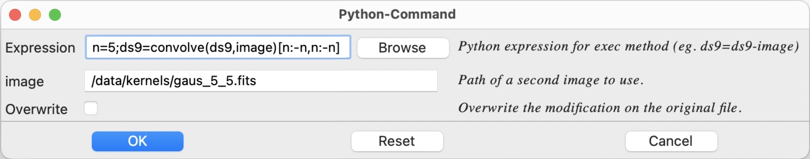
{kind=link}
![[ds9/3d3d.jpg]](#ds9/3d3d.jpg){kind=link}
Instrumentation
This series of functions aims to assist instrument researchers during assembly and testing with through-focus, light curves, centering, radial, energy profile analysis, etc. More complex but general processing functions (for detector characterization, for instance) can be found in the macros (See section 3.1.4 ) like auto-correlation, fast Fourier transform, smoothing, masking, interpolation, noise measurements, etc.
-
Centering (C) Centers
DS9region encircling a spot. Five centroid methods are available: maximum, \(2\times1\)1D fittin, 2D fitting, barycenter). -
Radial profile Compute and plot azimuthally averaged radial profile and energy profile of the encircled source in
DS9after performing a re-centering. For extended sources, the source size can be informed to deconvolve the radial profile from the source (Figure [ds9/radial.jpg] ). -
Throughfocus analysis Perform a through-focus analysis on a series of images and return different focus estimates as well as the 3D evolution of the PSF (Figure [ds9/throughfocus.jpg] ).
-
Explore PSFs/vignettes Explore PSFs/vignettes based on
SExtractorcatalog to visualize how it evolves in the field or with FWHM, magnitude, excentricity, angle or amplitude. -
Light curve Perform a light-curve analysis and returns the centered image.
-
Extract Sources Extract sources from images(s) using photutils [@Bradley2016]
-
Subtract Background Subtract background from images(s) using photutils
-
Aperture photometry Computes photometry in given aperture(s)
![[ds9/radial.jpg]](#ds9/radial.jpg){kind=link}
![[ds9/throughfocus.jpg]](#ds9/throughfocus.jpg){kind=link}
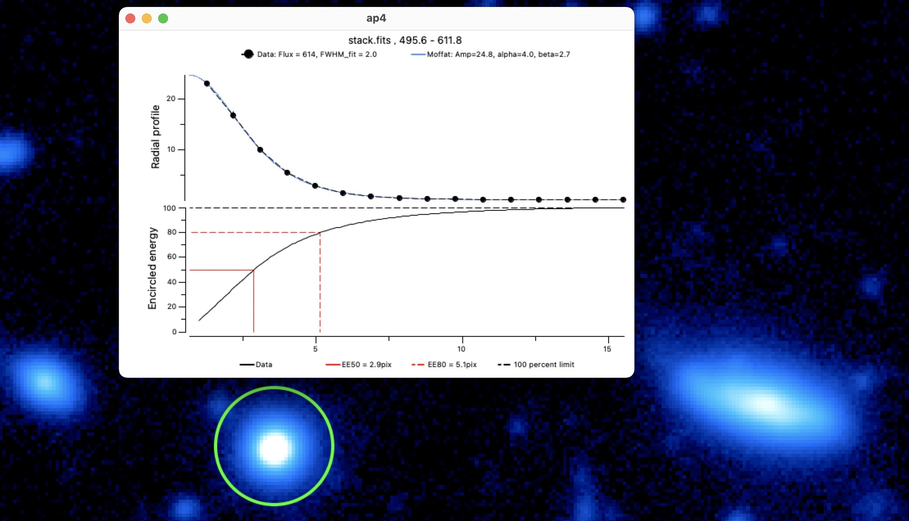 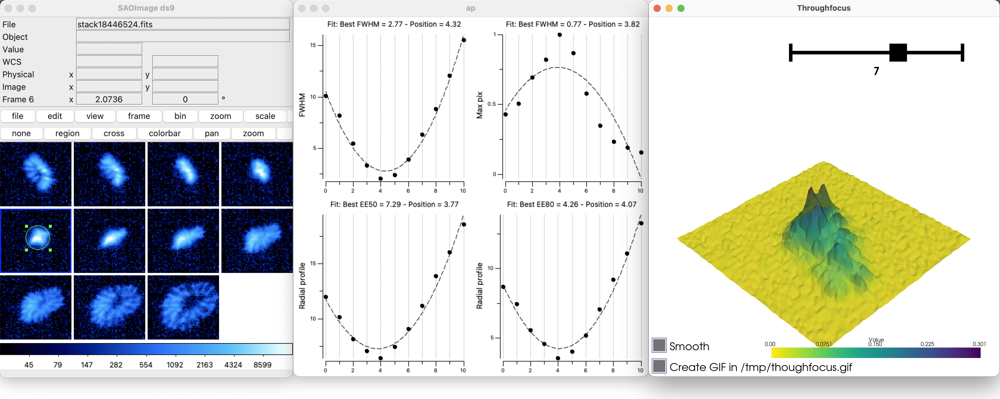
Astronomical software
The goal of this series of functions is to link the most essential
astronomical image processing software like the astromatic suite
(SExtractor, Stiff, Swarp, PSFex - need to be installed) and
offer them a parameter GUI.
-
Astrometric Calibration Uses
astrometry.netto compute position on the sky and return WCS header. If regions are created (by hand or viaSExtractor) and the parameter XY-catalog is set, only the position of the sources will be uploaded (). -
STIFF- Color Images RunSTIFFastromatic software [@Bertin2011a] to convert scientific FITS images to the more popular TIFF format for illustration purposes (). -
PSFexRunPSFexastromatic software [@Bertin2011] to extracts models of the Point Spread Function from FITS images processed withSExtractor, and measures the quality of images. The generated PSF models can be used for model-fitting photometry or morphological analyses. -
SExtractorRunSExtraxtorastromatic software [@Bertinl1996] to build a catalogue of objects from an astronomical image (Figure [ds9/sex.jpg] ). -
SwarpRunSwarpsoftware fromDS9[@Bertin2010] to resample and co-add together FITS images using any astrometric projection defined in the WCS standard. -
Resample images Run part of
Swarpastromatic software for resampling without co-addition.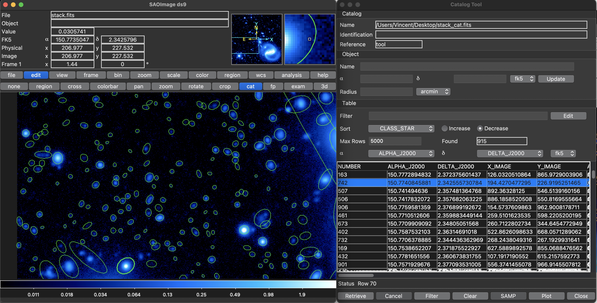
![[ds9/sex.jpg]](#ds9/sex.jpg){kind=link}